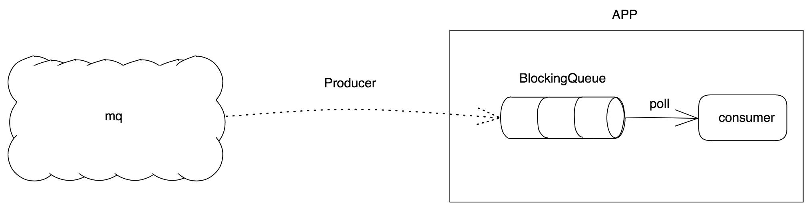

原来各个应用某些业务节点的日志通过filebeat+elk收集，供各个业务方使用，线上发现filebeat消耗非常大的硬件资源，而且应用集群较大，每次新增日志类型时需要新增filebeat配置并启动新的应用进程，较为繁琐和耗服务器资源；优化成通过kafka收集日志，consumer消费并写入es，考虑到频繁的写入es会造成应用资源、网络开销的浪费，设计上为批量写入es。该应用场景比较通用，考虑把该生产-消费模型抽成组件放入公共模块。
组件设计细节
- 使用方自定义业务属性；
- 使用方自定义写入阈值
- 业务方实现具体消费接口，建议使用线程池消费
- 支持按业务隔离阻塞队列，不同业务属性使用不同队列
- 单线程轮询阻塞队列，线程池执行消费，加快执行速率
- 支持任务在队列中驻留时间自定义
- 程序退出最大保证任务不丢失(钩子函数)
本着易用、可扩展性原则，使用方不关心内部实现，只需要关心消费策略和业务实现即可。该组件实现具体功能可以概括为：任务不断的被放入阻塞队列中，线程池会不断轮训队列，当任务数达到阈值时，会批量实现具体业务需求，并在程序退出时，最大化保证任务不丢失。
生产消费模型如下：

代码实现
阻塞队列集合：
public interface BlockQueue {
/**
* taskName : BlockingQueue
*/
Map<String, LinkedBlockingQueue<QueueTask>> BLOCK_MSG_QUEUE_TASK_MAP = Maps.newConcurrentMap();
}
任务QueueTask：
public interface QueueTask{
}
消费接口，使用方实现：
public interface BlockQueueConsumer<R> {
void accept(R queueTasks);
}
任务添加、处理类：
@Slf4j
public class QueueTaskExecutor {
private static final AtomicBoolean SHUTDOWN_HOOK_FLAG = new AtomicBoolean(true);
private static final AtomicInteger ATOMIC_INTEGER_COUNT = new AtomicInteger(0);
private static final ExecutorService QUEUE_TASK_EXECUTOR = Executors.newSingleThreadExecutor();
private static Integer MAX_IDLE_COUNT = 600;
/**
* max task count
*/
private Integer maxElements;
/**
* consumer interface
*/
private BlockQueueConsumer<List<QueueTask>> blockQueueConsumer;
/**
* task unique name
*/
private String taskName;
/**
* the theoretical maximum time that the task stays in the blocking queue. the time Must be an integer multiple of
* 100，if not the default is 60 * 1000
*/
private int delayMilliSecond;
@PostConstruct
private void init() {
// create block queue
BlockQueue.BLOCK_MSG_QUEUE_TASK_MAP.putIfAbsent(taskName, new LinkedBlockingQueue<QueueTask>());
// shutdown hook
addShutdownHook(QUEUE_TASK_EXECUTOR);
int idleCount = delayMilliSecond / 100;
MAX_IDLE_COUNT = idleCount > 0 ? idleCount : MAX_IDLE_COUNT;
QUEUE_TASK_EXECUTOR.execute(() -> {
while (true) {
try {
if (!SHUTDOWN_HOOK_FLAG.get()) { // task exit
if (BlockQueue.BLOCK_MSG_QUEUE_TASK_MAP.get(taskName).size() <= 0) {
log.warn(
"QueueExecutor shutdown executing,but the BLOCK_MSG_QUEUE empty. The task exit now.");
Thread.sleep(100);
// double check
if (BlockQueue.BLOCK_MSG_QUEUE_TASK_MAP.get(taskName).size() <= 0) {
return;
}
}
} else {
if (BlockQueue.BLOCK_MSG_QUEUE_TASK_MAP.get(taskName).size() < maxElements) {
// when idle times over #MAX_IDLE_TIME then do consumer
if (ATOMIC_INTEGER_COUNT.incrementAndGet() > MAX_IDLE_COUNT) {
try {
doConsumer();
} finally {
ATOMIC_INTEGER_COUNT.set(0);
}
}
Thread.sleep(100);
continue;
}
}
doConsumer();
} catch (Exception e) {
log.warn("QueueExecutor execute error.", e);
}
}
});
}
private void doConsumer() {
List<QueueTask> queueTasks = Lists.newArrayList();
// get tasks in batch
BlockQueue.BLOCK_MSG_QUEUE_TASK_MAP.get(taskName).drainTo(queueTasks, maxElements);
if (CollectionUtils.isEmpty(queueTasks)) {
log.warn("QueueExecutor BLOCK_MSG_QUEUE empty.");
return;
}
Task<List<QueueTask>> task = Task.<List<QueueTask>>builder().t(queueTasks).build();
blockQueueConsumer.accept(task);
}
/**
* add task to Queue
*
* @param taskName unique task name
* @param t element
* @param <T>
*/
public static <T extends QueueTask> void add2Queue(String taskName, T t) {
LinkedBlockingQueue<QueueTask> blockingQueue = BlockQueue.BLOCK_MSG_QUEUE_TASK_MAP.get(taskName);
Assert.notNull(blockingQueue, "QueueTaskExecutor blockingQueue taskName not exist！");
blockingQueue.add(t);
}
public static void addShutdownHook(ExecutorService executorService) {
Runtime.getRuntime().addShutdownHook(new Thread(() -> {
try {
SHUTDOWN_HOOK_FLAG.set(false);
Shutdown.shutdown(executorService, 100);
} catch (Exception e) {
log.error("QueueTaskExecutor shutdown fail.", e);
}
}));
}
private QueueTaskExecutor() {
}
public QueueTaskExecutor(String taskName, Integer maxElements, int delayMilliSecond,
BlockQueueConsumer blockQueueConsumer) {
this.taskName = taskName;
this.maxElements = maxElements;
this.delayMilliSecond = delayMilliSecond;
this.blockQueueConsumer = blockQueueConsumer;
}
}
具体代码实现也不复杂，有个细节的点，可能队列中任务一直没达到阈值，会导致任务一直驻留在队列中，所以在设计时，考虑到了不能让任务一直驻留，所以设计了超过驻留最大时间，会自动执行任务。使用无界阻塞队列LinkedBlockingQueue，保证高并发下放任务、批量获取任务的线程安全，具体不作多述。
使用
@Slf4j
@Configuration
public class QueueTaskConfig {
@Value("${bulkSize}")
private Integer bulkSize;
@Bean
public QueueTaskExecutor queueTaskExecutor() {
return new QueueTaskExecutor(QUEUE_TASK_NAME, bulkSize, 60 * 1000,
blockQueueConsumer());
}
@Bean(name = "XXXXBlockQueueConsumer")
public BlockQueueConsumer blockQueueConsumer() {
return new XXXXBlockQueueConsumer();
}
// 监控队列大小
static {
TRACE_SCHEDULE.scheduleAtFixedRate(() -> {
log.info("trace BlockQueue size: {}",
Option.of(BlockQueue.BLOCK_MSG_QUEUE_TASK_MAP.get(QUEUE_TASK_NAME))
.getOrElse(LinkedBlockingQueue::new)
.size()
);
}, 0, 1, TimeUnit.SECONDS);
}
}
BlockQueueConsumer实现类：
public class XXXXBlockQueueConsumer implements BlockQueueConsumer<List<EsMsgDto>> {
@Override
public void accept(List<EsMsgDto> task) {
// 线程池处理消费
ES_EXECUTOR.execute(() -> {
writer2Es(task.getT());
});
}
private void writer2Es(List<EsMsgDto> queueTasks) {
// 构建BulkRequest
BulkRequest bulkRequest = new BulkRequest();
Option.of(queueTasks)
.getOrElse(ArrayList::new)
.stream()
.map(EsCommand::buildIndexRequest)
.collect(Collectors.toList())
.forEach(bulkRequest::add);
// 批量写入es
EsCommand.addBulk(client, bulkRequest, new ActionListener<BulkResponse>() {
@Override
public void onResponse(BulkResponse bulkItemResponses) {
}
@Override
public void onFailure(Exception e) {
log.error("XXXXBlockQueueConsumer bulk onFailure.", e);
}
});
}
}
业务上使用比较简单，也较为灵活，支持多业务的生产消费，使用方可指定具体的消费阈值，实现具体的业务需求。